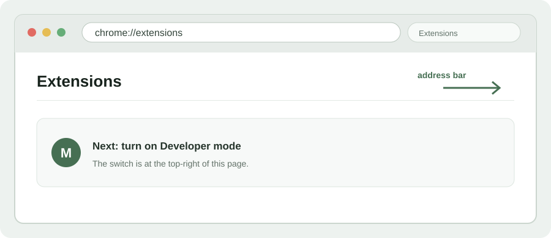
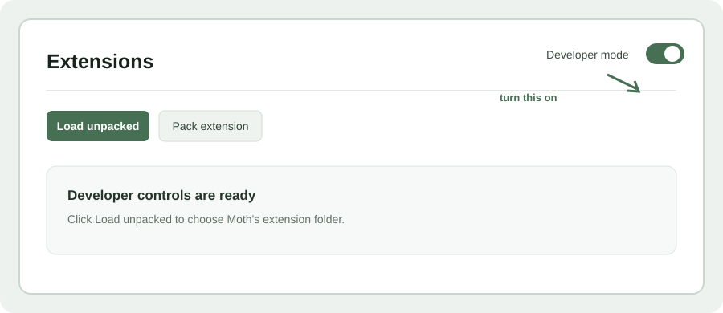
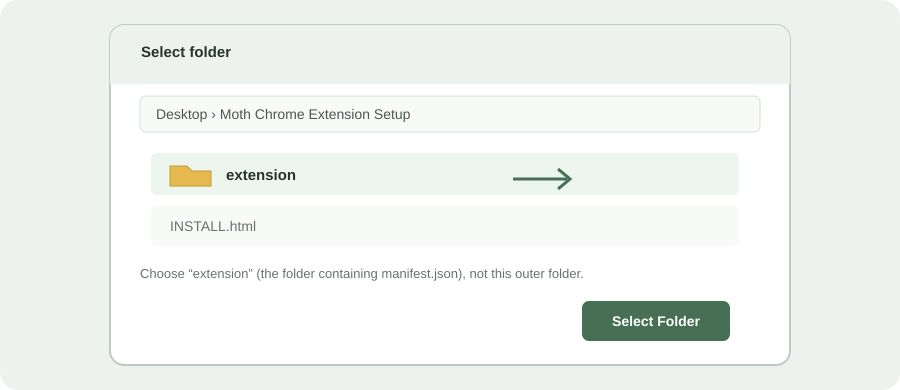

1. Open Chrome’s extension manager
- Open Google Chrome.
- Type
chrome://extensionsin the address bar and press Enter.

Three quick steps. This uses Chrome’s standard “Load unpacked” developer workflow; it does not bypass Chrome’s extension protections.
Keep this Desktop folder. Chrome runs the extension from the extension subfolder. If you move or delete it, the extension stops working. You can remove the folder after removing the extension from Chrome.
chrome://extensions in the address bar and press Enter.

manifest.json.Desktop\Moth Chrome Extension Setup\extension

The extension does not read browser cookies. Chrome may show its normal warning for an unpacked developer extension.